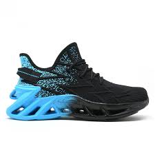

Product 1

Регулируемо закопчаване Каишка с катарама, велкро или връзки, които позволяват нагласяне според персоналните нужди. Стабилна подметка Трябва да усещате стабилност в петата и глезена без напрежение и без възможност да се движат свободно нагоре и встрани. Свободно пространство около пръстите Задължително е да има свободно пространство от половин до един сантиметър при пръстите отпред и отстрани. При ходене стъпалото естествено леко се удължава и разширява, затова е важно пръстите на крака да не опират плътно в предната част на обувката, а да има поне един палец разстояние.
More DetailsProduct 2
Регулируемо закопчаване Каишка с катарама, велкро или връзки, които позволяват нагласяне според персоналните нужди. Стабилна подметка Трябва да усещате стабилност в петата и глезена без напрежение и без възможност да се движат свободно нагоре и встрани. Свободно пространство около пръстите Задължително е да има свободно пространство от половин до един сантиметър при пръстите отпред и отстрани. При ходене стъпалото естествено леко се удължава и разширява, затова е важно пръстите на крака да не опират плътно в предната част на обувката, а да има поне един палец разстояние.
More DetailsProduct 3

Регулируемо закопчаване Каишка с катарама, велкро или връзки, които позволяват нагласяне според персоналните нужди. Стабилна подметка Трябва да усещате стабилност в петата и глезена без напрежение и без възможност да се движат свободно нагоре и встрани. Свободно пространство около пръстите Задължително е да има свободно пространство от половин до един сантиметър при пръстите отпред и отстрани. При ходене стъпалото естествено леко се удължава и разширява, затова е важно пръстите на крака да не опират плътно в предната част на обувката, а да има поне един палец разстояние.
More DetailsProduct 4
Регулируемо закопчаване Каишка с катарама, велкро или връзки, които позволяват нагласяне според персоналните нужди. Стабилна подметка Трябва да усещате стабилност в петата и глезена без напрежение и без възможност да се движат свободно нагоре и встрани. Свободно пространство около пръстите Задължително е да има свободно пространство от половин до един сантиметър при пръстите отпред и отстрани. При ходене стъпалото естествено леко се удължава и разширява, затова е важно пръстите на крака да не опират плътно в предната част на обувката, а да има поне един палец разстояние.
More DetailsProduct 5
Регулируемо закопчаване Каишка с катарама, велкро или връзки, които позволяват нагласяне според персоналните нужди. Стабилна подметка Трябва да усещате стабилност в петата и глезена без напрежение и без възможност да се движат свободно нагоре и встрани. Свободно пространство около пръстите Задължително е да има свободно пространство от половин до един сантиметър при пръстите отпред и отстрани. При ходене стъпалото естествено леко се удължава и разширява, затова е важно пръстите на крака да не опират плътно в предната част на обувката, а да има поне един палец разстояние.
More Details